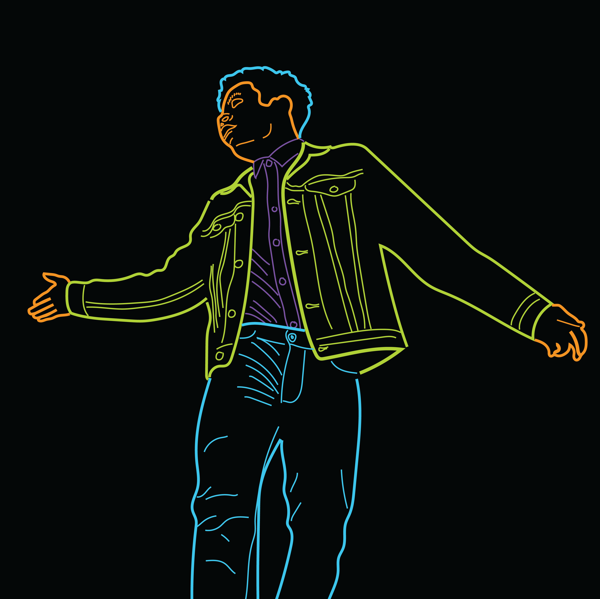

I am a twenty-three-year-old NEW YORK-BASED COMPUTER PROGRAMMER AND MULTIMEDIA ARTIST. I graduated in December 2021 from the University of Illinois Chicago (UIC) where I studied COMPUTER SCIENCE while also working on PHOTO AND ART PROJECTS on the side. My interest in these two distinct fields come from the qualities of creatvity and technicality that they both demand.
On one side of things I've worked as a Software Engineer and developed APPS, WEBSITES, AND PROGRAMS. On the other hand I've used advanced creative software and digital equipment to create MANY PHOTO SERIES, RUN YOUTUBE CHANNELS THAT HAVE RECEIVED HUNDREDS OF THOUSANDS OF VIEWS, AND I'VE EXPLORED OTHER ARTISTIC MEDIUMS as well such as writing, painting, and new media art. For the work I've created I've received recognition in the form of the ROY POLLACK HOWARD SCHOLARSHIP for engineering and nominations from the NATIONAL ACADEMY OF TELEVISION ARTS AND SCIENCES (NATAS) for my film work. I'm always looking to what's next as I continue to grow as both an artist and engineer.
Education
Bachelor of Science in Computer Science • Honors College • University of Illinois Chicago • December 2021
Programming Languages
Java • C++ • C • Python • HTML • CSS • JavaScript • SQL • Go • F/XML
Content Creation
Broadcasting/media training • Photography • Videography • Graphic design • Adobe CC (Photoshop, Premiere Pro, Illustrator, After Effects)
Contact Daniel
daniellevert@icloud.com • LinkedIn